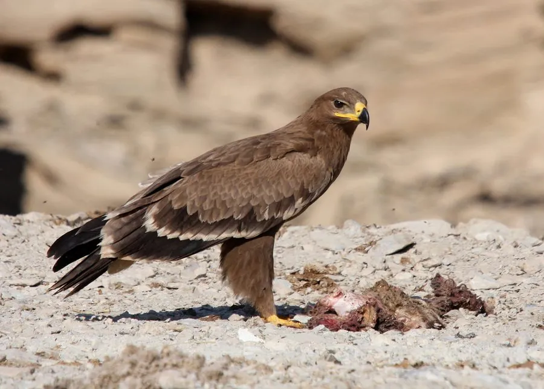

鸟类 · 动物界
草原雕 Aquila nipalensis

欧亚草原上的大型猛禽，成鸟通体深褐、翼下有大块白斑，长距离迁徙到非洲和南亚，因种群锐减被列为濒危。
- 分类
- 门脊索动物门纲鸟纲目鹰形目科鹰科属雕属
- 栖息环境
- 开阔草原、半荒漠、农田与牲畜区
- 地理分布
- 东欧、中亚、蒙古和中国北部，冬季迁徙至非洲东部、中东和南亚
- 保护级别
- IUCN 濒危（EN）；中国国家一级保护动物
物种志
草原雕体长 62–75 厘米，翼展 155–185 厘米，体重 2–4 千克，雌鸟大于雄鸟。成鸟全身深褐色，翼下覆羽有大块白色斑，尾羽有浅色横带；幼鸟羽色较浅，飞羽和尾羽有白色横纹。
草原雕繁殖于东欧、中亚、蒙古和中国北部草原，冬季长距离迁徙到非洲东部、中东和南亚。它栖息在开阔草原、半荒漠和农田，以黄鼠、仓鼠、野兔、鸟类和腐肉为食，也常跟随牲畜群寻找腐尸。雌鸟每窝产 1–3 枚卵，孵化约 45 天，雏鸟约 60 天后离巢。由于草原开垦、灭鼠剂中毒、触电和盗猎，草原雕种群数量快速下降，被列为濒危，在中国属于国家一级保护动物。
形态与习性
- 食性黄鼠、仓鼠、野兔、鸟类与腐肉
- 体长62–75 cm
- 翼展155–185 cm
- 体重2–4 kg
- 繁殖每窝 1–3 枚卵，孵化约 45 天
- 迁徙冬季迁至非洲东部、中东和南亚
趣味知识
- 草原雕冬季会从欧亚草原长距离迁徙到非洲和南亚。
- 成鸟翼下有大块白色斑，飞行时十分醒目。
- 草原开垦和灭鼠剂中毒使草原雕被列为濒危。